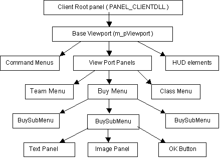
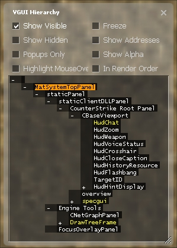
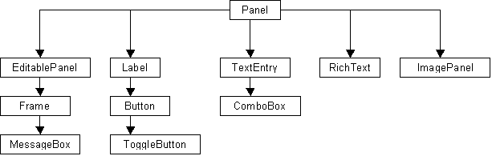
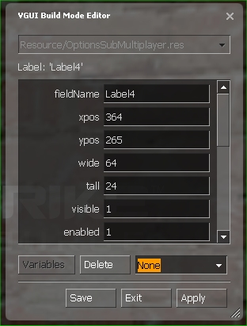

VGUI 2
Overview
The VGUI2 library (vgui2.dll) is a proprietary graphic user interface (GUI) provided by the Source Engine. All Source & Steam applications use VGUI for displaying windows, dialogs or menus. The object architecture is hierarchical and all implemented elements drive from VGUI base classes. The keyboard & mouse input system is event driven and quite similar to other GUI libraries (like Java Swing or .Net forms). Implementations for the most common GUI elements like buttons, text fields or images are provided by the VGUI controls library (vgui_controls.lib). Besides drawing GUI elements and processing input, VGUI also handles localization for displaying text in the preferred user language. All VGUI base interface headers are located in \public\vgui\, control elements are defined in \public\vgui_controls\.
As a mod author you will most likely use VGUI in the client.dll project to show menus, HUD elements or for in-game displays (on weapons or computer terminals etc). The base class all VGUI elements derive from is vgui::Panel, which defines an area on your screen that has a specific size and position, can draw itself and process input events. Dialog windows, text fields and buttons are all VGUI panels in a hierarchical parent-child relationship. The very first panel is the root panel and is provided by the Source engine. The client root panel covers the whole screen, but doesn't show anything. Even you could use the client root panel, most client panels use the shared BaseViewport panel as parent ( g_pClientMode->GetViewport() ).
This diagram shows a part of the client panel hierarchy. An arrow between two panels means "is parent of" :
To browser through the VGUI panel hierarchy during runtime you can open the VGUI Hierarchy tool by executing in developer console vgui_drawtree 1. All panels are listed in an expandable tree view. Panels name are colored :
white : |
Panel is visible |
grey : |
Panel is hidden |
yellow : |
Popup panel (Frame) |
green : |
Panel has focus |
The following options are available:
Show Visible : |
list all visible panels |
Show Hidden : |
list all hidden panels |
Popups only : |
list only Popup panels (Frames) |
Highlight Mouse Over : |
Panels are highlighted with a colored border when you move the mouse cursor over. The panel tree will be expanded to show the current panel. |
Freeze : |
Locks current tree view |
Show Addresses : |
shows panel memory address |
Show Alpha : |
show panel alpha value, 0 = translucent, 255 = opaque |
In render Order : |
sort panels in tree by rendering order |
The Panel Class
The VGUI class Panel is the base class for over 50 different control elements, which are defined in \public\vgui_controls\. The header files usually provide a good documentation about the control features and behaviors. The following diagram shows the class hierarchy for some common used elements:
Since all VGUI classes derive from class Panel, we should take a closer look at the essential member functions and properties.
The most commonly used constructor to create a panel is Panel(Panel *parent, const char *panelName), since each panel needs a parent panel it belongs to and a unique name in it's hierarchy level. Once a panel is created you can make it visible or hide it again with SetVisible(bool state).
VGUI keeps a handle for each new panel, which is used to globally address a panel without passing pointers. Lots of event messaging functions use these VPANEL handles to identify source and target panels. To get the unique VPANEL handle of a panel call GetVPanel().
To set a panel's position and size use the SetPos(int x,int y) and SetSize(int wide,int tall) member functions. The size is always in pixels and doesn't scale automatically with increasing screen resolutions. The position is always relative to the given parent panel, where (0,0) is the upper left corner.
To iterate through the panel hierarchy using a certain panel as starting point, you get the parent panel by calling GetParent() or GetVParent() to get the corresponding VPANEL handle. Of course a panel can have only one parent panel, but multiple child panels (sub panels, buttons, list elements etc). GetChildCount() will return the total number of children, were each child can be queried with GetChild(int index).
If a panel should react to input events like key pressed or mouse click, the virtual OnEvent() functions like OnMousePressed(MouseCode code) or OnKeyCodePressed(KeyCode code) must be overwritten. Mouse and keyboard input events can be enabled/disabled for a panel using SetMouseInputEnabled(bool state) or SetKeyBoardInputEnabled(bool state).
Another useful virtual function to overwrite is OnThink() which is called every time the panel is redrawn. Sometimes this is too much and you want update or check the panel state less often. Then you can hook into OnTick() which is called frequently in an adjustable time interval. But VGUI must be told that it should call OnTick() for a given panel and how often, this is done with ivgui()->AddTickSignal(VPANEL panel, int intervalMilliseconds).
Windows & Popups
A Panel a described as above is always a 100% sub area of its parent panel, its position is always a fixed relative offset and can only be changed by code. Also it draws itself only inside the parent region, if you move a VGUI element outside the parent panel, it will be clipped. This is fine for adding control elements, images or text fields to a panel, but wouldn't allow independent pop-up windows or dialog boxes the user can move around, resize and minimize. Therefore VGUI panels have the MakePopup() function which decouples a panel from is parent rendering and makes it a new, independent window. Still it belongs to a parent panel and becomes invisible if the parent does.
In most cases you won't call MakePopup() by yourself but use the Frame class instead. The Frame class encapsulates all common GUI windows features like title bar, system menu (close, minimize, maximize), dragging, resizing, focus and layout management.
Here a short example how to open a frame and activate it. Note that the frame will delete itself once the user closes the frame or the Close() function is called (just make sure that your stuff is cleanup up in the destructor).
Frame *pFrame = new Frame( g_pClientMode->GetViewport(), "MyFrame" );
pFrame->SetScheme("ClientScheme");
pFrame->SetSize( 100, 100 );
pFrame->SetTitle("My First Frame", true );
pFrame->Activate(); // set visible, move to front, request focus
If a Frame is resized, the virtual function PerformLayout() is called so the frame can rearrange its elements to fit best for the new size. The current Frame position and size can also be locked with SetMoveable(bool state) and SetSizeable(bool state).
Event Messaging
VGUI panels communicate via a message system to signal state changes or events to parents or children (or any other panel). Messages are not sent directly (e.g. by calling a panel listener function), rather they are handed over to VGUI which delivers them to the target panel. Thus beside the message content, a sender and a receiver panel must be specified as VPANEL handles. VGUI sends event messages to inform panels about changes or events (mouse moved, input focus changed etc).
The message name and content is specified using a KeyValues object (\public\KeyValues.h). The KeyValues class is a very generic and flexible structure to store data records containing strings, integer or float numbers. A KeyValues object has a name and a set of data entries. Each entry has a unique key name and corresponding value. KeyValues also allow creating hierarchical structures using sub keys, though most VGUI messages are flat data records. KeyValues don't have data/type definitions or similar, so you can add or remove entries of any type as you like. Thus sender and receiver must both know the internal structure (e.g. key names, types and their meaning) of a KeyValues message object to communicate successfully. Here some sample code how to use KeyValues in general:
// create a new KeyValues Object named "MyName"
KeyValues *data = new KeyValues("MyName");
// add data entries
data->SetInt( "aInteger", 42 );
data->SetString( "aString", "Marvin" );
// read data entries
int x = data->GetInt("aInteger");
Con_Printf( data->GetString("aString") );
// destroy KeyValues object again, free data records
data->deleteThis();
To send a message you can call the Panel member function PostMessage(…) or directly ivgui()-> PostMessage(…). The name of the KeyValues object is also the message name used for later dispatching. VGUI will call the target panel's OnMessage(…) function, which will dispatch the message to a previous defined message handler. A panel can register new message handlers with one of the MESSAGE_FUNC_* macros, which adds a handler function to the message map. Never overwrite OnMessage(…) to handle new messages, always use a macro.
First declare a message handler for the receiving panel:
class MyParentPanel : public vgui::Panel
{
...
private:
MESSAGE_FUNC_PARAMS( OnMyMessage, "MyMessage", data );
}
void MyParentPanel::OnMyMessage (KeyValues *data)
{
const char *text = data->GetString("text");
}
The sending panel creates a KeyValues object, adds message parameters and sends the message (to it's parent in this case). The KeyValues object is destroyed by VGUI after it has been processed.
void MyChildPanel::SomethingHappend()
{
if ( GetVParent() )
{
KeyValues *msg = new KeyValues("MyMessage");
msg->SetString("text", "Something happend");
PostMessage(GetVParent(), msg);
}
}
Using PostMessage()the sending panel must address a single, specific target, which means that all other panels interested in a state change must be known and addressed individually. To avoid hard coding these dependencies, panels have a public event system called action signals. A panel fires generic events with PostActionSignal(KeyValues *message) and interested panels can register as listeners for these signals with AddActionSignalTarget(Panel *target). These action signals are widely used but VGUI controls, for example messages like "TextChanged" fired by class TextEntry or "ItemSelected" used by class ListPanel. All action signal messages contain a pointer entry " panel" that points to the sending panel.
The example from above using action signals would need the parent panel to register as a listener, preferably in the constructor after the child panel has been created. The child panel just uses PostActionSignal() instead of PostMessage():
MyParentPanel::MyParentPanel()
{
...
m_pChildPanel->AddActionSignalTarget( this );
}
void MyParentPanel::OnMyMessage (KeyValues *data)
{
const char *text = data->GetString("text");
Panel *pSender = (Panel *) kv->GetPtr("panel", NULL);
}
void MyChildPanel::SomethingHappend()
{
KeyValues *msg = new KeyValues("MyMessage");
msg->SetString("text", "Something happend");
PostActionSignal ( msg );
}
A common used action signal is the "Command" message, since no message handler needs to be installed. Panels just need to derive the virtual Panel function OnCommand(const char *command) and check for the correct command string. The "Command" message is used by all Button classes and is fired whenever the button is pressed. Here the example from above using the Command message:
class MyParentPanel : public vgui::Panel
{
...
protected:
virtual void OnCommand(const char *command);
}
MyParentPanel::MyParentPanel()
{
...
m_pChildPanel->AddActionSignalTarget( this );
}
void MyParentPanel::OnCommand(const char *command)
{
if (!stricmp(command, "SomethingHappend "))
{
DoSomething ();
}
else
{
BaseClass::OnCommand(command);
}
}
void MyChildPanel::SomethingHappend()
{
KeyValues *msg = new KeyValues("Command");
msg->SetString("command", "SomethingHappend");
PostActionSignal ( msg );
}
Schemes & BuildMode
A VGUI scheme defines the general "Look&Feel" of your panels by specifying used colors, fonts & icons of control elements. Schemes are defined in resource files, for example hl2\resource\clientscheme.res. A new panel inherits by default the scheme settings used by its parent. The VGUI scheme manager can load a new scheme with LoadSchemeFromFile(char *fileName, char *tag) which returns HScheme handle. To make a panel using a loaded VGUI scheme call the panel member function SetScheme(HScheme scheme).
Schemes set the general look of panel elements, but they don't arrange specific control elements of your panel. One way of adding elements to your panel is by doing that in source code. You can create them (usually in the constructor of the parent panel) and set properties like size and position manually using the panel member functions. This will become quite complex and time-consuming for larger dialogs with lots of control elements.
The most common way to define the layout of your panel elements is to describe all elements in an external resource file like "hl2\resource\UI \classmenu.res" (a KeyValues text file). When the parent panel is created, this file is loaded and executed with LoadControlSettings(char *dialogResourceName). In this resource file each control element is defined in a separate section. A typical control definition looks like this:
"MyControlName"
{
"ControlName" "Label" // control class
"fieldName" "MyControlName" // name of the control element
"xpos" "8" // x position
"ypos" "72" // y position
"wide" "160" // width in pixels
"tall" "24" // height in pixels
"visible" "1" // it's visible
"enabled" "1" // and enabled
"labelText" "Hello world" // show this text
"textAlignment" "west" // right text alignment
}

Each control property has a key name and a value. Properties defined by the base class Panel are available for all controls (like xpos, ypos, wide, tall etc). A list of all available key names is returned by the panel member function GetDescription(). Derived panel classes may add new fields for their specific properties. Processing these new fields must be handled by overwriting the virtual function ApplySettings(KeyValues *inResourceData). Here you can also lookup how values for an existing control property are interpreted.
Even simpler to use is the VGUI Build-Mode that allows you to modify and save the layout of a panel resource file while the application is running. To edit a panel, just start the game and open this panel, so it gets the input focus. Then press SHIFT+CTRL+ALT+B to open the VGUI Build-Mode editor. In Build-Mode you can easily rearrange existing elements and change their control properties (press 'Apply' to update changes). To add a new control element, just choose the desired class from the combo-box on the lower right side and an empty control object of that class will be place in your panel for further editing. To save the current layout in the associated resource file press the 'Save' button (make sure the resource file is not write-protected).
Drawing & Surfaces
Using schemes and control properties you can change the general appearance and layout of existing controls, but it doesn't allow you to create completely new elements. To change the appearance of a panel you have to override the two virtual functions Panel::Paint() and Panel::PaintBackground(). In these functions you can use drawing functions provided by the ISurface interface to place lines, rectangles, text, images etc. When updating the screen, VGUI calls first PaintBackground() and then Paint() for each panel and it's children panels recursively. Drawing coordinates are relative to the panel you draw in. Here same example code how to draw a red box in the upper left corner:
void MyPanel::Paint(void)
{
BaseClass::Paint();
surface()->DrawSetColor( 255, 0, 0, 255 ); //RGBA
surface()->DrawFilledRect( 0, 0, 20, 20 ); //x0,y0,x1,y1
}
To draw text on a panel surface you need to set the used font first. Fonts have names like "DefaultSmall" and their properties like True-Type-Font, size and weight are defined in scheme resource files. The font handle can be retrieved by calling GetFont("Name") of the current panel scheme, then the surface can be told to use it as the current font. After setting the color and position for the next text output, the text itself must be passed as wide char string (Unicode) to DrawPrintText(…). This text will not be printed as it is and not localized anymore, so localization tokens must be translated beforehand.
void MyPanel::Paint(void)
{
wchar_t *pText = L"Hello world!"; // wide char text
// get the right font handle for this scheme
vgui::IScheme *pScheme = vgui::scheme()->GetIScheme(GetScheme());
vgui::HFont hFont = pScheme->GetFont( "DefaultSmall" );
surface()->DrawSetTextFont( hFont ); // set the font
surface()->DrawSetTextColor( 255, 0, 0, 255 ); // full red
surface()->DrawSetTextPos( 10, 10 ); // x,y position
surface()->DrawPrintText( pText, wcslen(pText) ); // print text
}
To draw a texture or image, VGUI has to load the texture from disk once (panel constructor) and generate a corresponding texture ID. This texture ID is then used as reference when drawing the texture. Here an example how to load and draw the texture "\resources\vgui\mylogo.vmt":
MyPanel::MyPanel(void)
{
m_nTextureID = vgui::surface()->CreateNewTextureID();
gui::surface()->DrawSetTextureFile( m_nTextureID, "vgui/mylogo" , true, false);
}
void MyPanel::Paint(void)
{
vgui::surface()->DrawSetTexture( m_nTextureId );
vgui::surface()->DrawTexturedRect( 0, 0, 100, 100 );
}
Localization
VGUI text elements support automatic localization for the preferred user language. Lets assume a text label should show "Hello world!" then you could set this text directly with SetText( "Hello World."). But if the user would choose a different language than English this label would still show the English text. Therefore you should always use localization tokens to tell VGUI to translate the token into user language, in this example SetText( "#MyMod_HelloWorld"). Tokens are strings starting with the pound sign '#' as control character to tell VGUI that this is not plain text.
VGUI keeps a global translation table to map tokens to plain text representation. These translation tables are loaded from resource files, were each file has an extra copy for every supported language (e.g. \resource\hl2_english.txt, \resource\hl2_german.txt). A new token definition for your game would look like this:
In mymod_english.txt:
"MyMod_HelloWorld" "Hello world."
"[english] MyMod_HelloWorld " "Hello world."
In mymod_german.txt:
"MyMod_HelloWorld" "Hallo Welt."
"[english] MyMod_HelloWorld " "Hello world."
If your game folder is named "mymod" the Source engine will automatically load the correct translation file (/resource/gamedir_language.txt). You can load additional translation files using the ILocalize interface function AddFile(…).
You can use the ILocalize interface also to manually translate a token into current user language, e.g. vgui::localize()->Find("#MyMod_HelloWorld"). This function returns the translation as a 16-bit wide char string (Unicode).
VGUI uses Unicode for all text representation to support languages that use more then the 255 ASCII characters like Chinese or Russian. Language resource files are encoded as Unicode, where each character is encoded by 2 bytes. Most text editors support Unicode documents and you won't notice a difference to ASCII documents. To convert strings between ANSI ASCII and Unicode during runtime you can used the ILocalize interface functions ConvertANSIToUnicode(…) and ConvertUnicodeToANSI(…). Also a very useful function is ConstructString(…) which is basically like sprintf(…) for Unicode strings.
© 2004 Valve Corporation. All rights reserved. Valve, the Valve logo, Half-Life, the Half-Life logo, the Lambda logo, Steam, the Steam logo, Team Fortress, the Team Fortress logo, Opposing Force, Day of Defeat, the Day of Defeat logo, Counter-Strike, the Counter-Strike logo, Source, the Source logo, Hammer and Counter-Strike: Condition Zero are trademarks and/or registered trademarks of Valve Corporation. Microsoft and Visual Studio are trademarks and/or registered trademarks of Microsoft Corporation. All other trademarks are property of their respective owners.